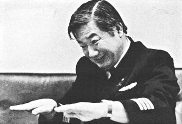
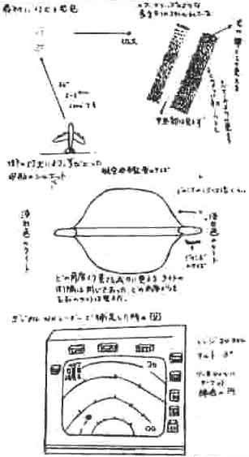

Observation
Kenju Terauchi

Dessins de Terauchi des traffics non identifiés rencontrés par son Jumbo Jet : en haut
les lumières ovni devant l'avion et un schéma détaillé des lumières, au milieu l'aspect de silhouette de l'ovni
énorme, et en bas comment celui-ci est d'abord apparu sur l'écran radar de l'avion MUFON UFO Journal

Le , le capitaine Kenju Terauchi des JAL pilote le vol 1628, un avion-cargo au-dessus
de Fort Yukon (Alaska), en route depuis l'Islande en direction
d'Anchorage (Alaska). Le jet vole à 10500 m, à une orientation de 215 ° au-dessus du
Nord-Est de l'Alaska.
, les 2 membres de son équipage et lui se rendent compte que leur Boeing 747 est
accompagné de 2 lumières de la taille d'un avion - ils supposent d'abord qu'il s'agit d'avions de l'USAF - toutes 2 émanant d'un objet étrange. De la forme d'une noix (ou une
sphère entourée d'un anneau), ce dernier fait au moins 2 fois la taille d'un gros porteur. Il reste à la hauteur du
747 pendant plus de avant de disparaître. Les ovnis émettaient des lumières vertes et jaunes.
L'observation est partiellement confirmée par des radars.